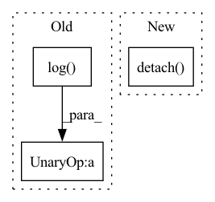

Pattern ID :15691
Before Change
def initialize_biases(self):
for conv in self.cls_preds:
b = conv.bias.view(self.na, -1)
b.data.fill_(-math.log((1 - self.prior_prob) / self.prior_prob) )
conv.bias = torch.nn.Parameter(b.view(-1), requires_grad=True)
for conv in self.obj_preds:
b = conv.bias.view(self.na, -1)After Change
conv.weight = torch.nn.Parameter(w, requires_grad=True)
self.proj = nn.Parameter(torch.linspace(0, self.reg_max, self.reg_max + 1), requires_grad=False)
self.proj_conv.weight = nn.Parameter(self.proj.view([1, self.reg_max + 1, 1, 1]).clone().detach() ,
requires_grad=False)
def forward(self, x):In pattern: SUPERPATTERN
Frequency: 3
Non-data size: 3
Instances Fragment ID: 53029643
Project Name: augmentedstartups/as-one
Commit Name: 6f2f010dcaf35105030dcf5c371d3d2f97c25d90
Time: 2022-09-16
Author: ajmair.kashif@axcelerate.ai
File Name: asone/detectors/yolov6/yolov6/models/effidehead.py
M Class Name: Detect
N Class Name: Detect
M Method Name: initialize_biases(1)
N Method Name: initialize_biases(1)
M Parent Class: nn.Module
N Parent Class: nn.Module
M File Name: asone/detectors/yolov6/yolov6/models/effidehead.py
N File Name: asone/detectors/yolov6/yolov6/models/effidehead.py
M Start Line: 48
M End Line: 57
N Start Line: 55
N End Line: 73
Before Change
// compute scoring gt and loss
score_gt = F.softmax(-distance_metric(pred_dict["traj"], gt_dict["y"])/self.temper, dim=-1)
score_loss = torch.sum(torch.mul(- torch.log(pred_dict["score"]) , score_gt))
loss += self.lambda3 * score_loss
loss_dict = {"tar_cls_loss": cls_loss, "tar_offset_loss": offset_loss, "traj_loss": reg_loss, "score_loss": score_loss}After Change
loss += self.lambda2 * reg_loss
// compute scoring gt and loss
score_gt = F.softmax(-distance_metric(pred_dict["traj"], gt_dict["y"])/self.temper, dim=-1).detach()
// score_loss = torch.sum(torch.mul(- torch.log(pred_dict["score"]), score_gt)) / batch_size
score_loss = F.binary_cross_entropy(pred_dict["score"], score_gt, reduction="sum")
loss += self.lambda3 * score_loss
Fragment ID: 53029651
Project Name: henry1iu/tnt-trajectory-predition
Commit Name: 3407448e60091157b38747900b5a0131660c974c
Time: 2022-03-21
Author: liu.jb.henry@gmail.com
File Name: core/loss.py
M Class Name: TNTLoss
N Class Name: TNTLoss
M Method Name: forward(5)
N Method Name: forward(5)
M Parent Class: nn.Module
N Parent Class: nn.Module
M File Name: core/loss.py
N File Name: core/loss.py
M Start Line: 97
M End Line: 117
N Start Line: 109
N End Line: 128
Before Change
def initialize_biases(self):
for conv in self.cls_preds:
b = conv.bias.view(self.na, -1)
b.data.fill_(-math.log((1 - self.prior_prob) / self.prior_prob) )
conv.bias = torch.nn.Parameter(b.view(-1), requires_grad=True)
for conv in self.obj_preds:
b = conv.bias.view(self.na, -1)After Change
conv.weight = torch.nn.Parameter(w, requires_grad=True)
self.proj = nn.Parameter(torch.linspace(0, self.reg_max, self.reg_max + 1), requires_grad=False)
self.proj_conv.weight = nn.Parameter(self.proj.view([1, self.reg_max + 1, 1, 1]).clone().detach() ,
requires_grad=False)
def forward(self, x): Fragment ID: 53029650
Project Name: meituan/yolov6
Commit Name: 49a80b1fdd025c9a326d0e4fea9825581dec00f4
Time: 2022-08-31
Author: lichuyi@meituan.com
File Name: yolov6/models/effidehead.py
M Class Name: Detect
N Class Name: Detect
M Method Name: initialize_biases(1)
N Method Name: initialize_biases(1)
M Parent Class: nn.Module
N Parent Class: nn.Module
M File Name: yolov6/models/effidehead.py
N File Name: yolov6/models/effidehead.py
M Start Line: 48
M End Line: 57
N Start Line: 55
N End Line: 73